Форматирование символов и абзацев
Для привлечения внимания к фрагменту текста, слову, символу, его можно красиво оформить, выделить, т.е. отформатировать.
Минимальным форматируемым в MS Word фрагментом текста является символ. Символ — это отдельная буква, цифра, знак пунктуации или специальный знак. Символы объединяются в слова – группы символов, разделенные пробелами. Из слов можно составлять предложения. Абзац — это последовательность предложений, объединенных вместе для выражения отдельной мысли, идеи или образа. При работе с MS Word абзацем могут быть: заголовок статьи, элемент списка, пустая строка между двумя абзацами и т.п.
Форматирование символов
Форматирование символов можно осуществить с помощью:
- кнопок на вкладке Главная в группе Шрифт,
- путем нажатия кнопки справа от названия группы Шрифт.
Вы можете определить различные способы форматирования для вновь вводимого символа или уже написанного.
Форматирование символов с помощью вкладки Главная
- Выделите символ(ы), для которого хотите задать особое форматирование.
- Нажмите кнопку на вкладке Главная в группе Шрифт по выбору
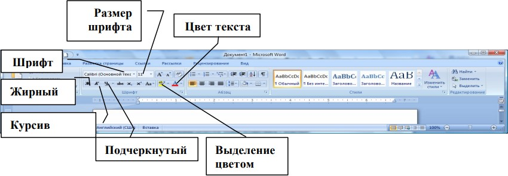
Рис. Группа Шрифт на вкладке Главная для форматирования текста
| Элемент | Описание |
|---|---|
| Поле шрифт 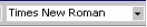 | Позволяет установить шрифт для символов (Шрифт — это набор одинаковых по начертанию букв и цифр латинского и русского алфавита, а также знаков препинания). Выберите нужный шрифт из списка. Существует большой список шрифтов, однако не все шрифты позволяют отобразить русские буквы. Универсальными являются следующие шрифты (в том числе, отображающие русские буквы): Arial, Courier, Garamond, Tahoma, Times New Roman. В более ранних версиях, либо в других программах вы можете увидеть название шрифта с окончанием Cyr — данное слово указывает на возможность выбранного шрифта отображать русские буквы. |
| Поле Размер Шрифта (Font Size) 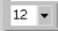 | Позволяет установить размер символа, выражается в пунктах. В поле Размер Шрифта (Font Size) может быть задан размер символов от 1 до 1638, в зависимости от выбранного шрифта. Как правило, размер шрифта выбирается из предложенного списка |
| Жирный (Bold), Подчеркнутый (Underline), Курсив (Italic) 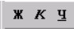 | ППозволяют установить соответственно жирность, подчеркнутость или наклонное начертание для символов. Вы можете комбинировать начертание символов в соответствии с вашими требованиями. Например, символ может быть жирным курсивом или подчеркнутым курсивом. Эти кнопки имеют обратное действие: чтобы отказаться от какого-либо начертания, выделите символ(ы) и отожмите соответствующую кнопку |
Выделение цветом (Highlight)

|
Позволяет установить цветовой фон для выделения текста: цвет фона соответствует цвету, который находится на кнопке. Цвет фона можно выбрать, щелкнув на кнопку списка рядом с этой кнопкой и из дополнительного окна выбрать цвет. Для того чтобы снять выделение текста, выберите Нет цвета. Выделение цвета распространяется только на уже существующий текст. Вы не можете задать выделение цветом для вновь вводимого цвета |
| Цвет шрифта (Font Color) 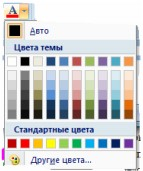 | Позволяет установить цвет для символов. Вы можете выбрать дополнительные цвета для символов, щелкнув на кнопку списка рядом с этой кнопкой и выбрать из дополнительного окна цвет. Команда Другие цвета…(More colors) позволяет задать пользовательский цвет символов |
Зачеркнутый

|
Добавление линии, проходящей через середину выделенного текста |
| Подстрочный и надстрочный 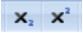 | Создание символов меньшего размера ниже (подстрочный) и выше (надстрочный) опорной линии текста |
| Регистр 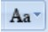 | Преобразование всех букв в выделенного текста в ПРОПИСНЫЕ или строчные, выбор других режимов расстановки прописных и строчных букв |
| Увеличить/уменьшить размер 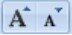 | Увеличение или уменьшение размера шрифта |
| Очистить формат 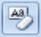 | Удаления любого форматирования из выделенного фрагмента. Остается только обычный текст |
Форматирование абзаца
Абзац MS Word — это любой фрагмент текста, который заканчивается маркером абзаца (¶). При нажатии на клавишу ENTER, образуется новый абзац.
Маркер абзаца виден при включенном режиме непечатных символов: кнопка Непечатаемые знаки (Shoe/Hide¶) на вкладке Главная группа Абзац должна быть нажата.
Вы можете отформатировать абзац, чтобы изменить в нем:
- выравнивание текста;
- отступы;
- межстрочный интервал, интервалы до и после абзаца.
Выравнивания текста в абзаце с помощью вкладки Главная
Самый простой способ задать выравнивание текста, т.е. расположение текста в абзаце по левому краю, по правому, по центру или по ширине страницы, это использовать кнопки на вкладке Главная в группе Абзац.
- Выделите абзацы.
- Нажмите на соответствующую кнопку на вкладке Главная в группе Абзац
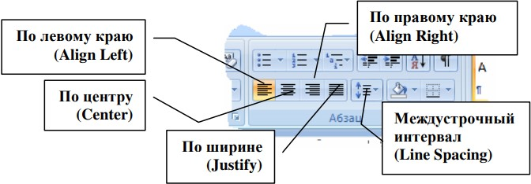
Рис. Форматирование: кнопки для форматирования абзацев
Создание отступов в абзаце с помощью линейки
При выравнивании текста, вы указываете, как MS Word должен расположить текст относительно полей страницы. Вы также можете задать дополнительные ограничения – отступы от полей станицы, в пределах которых будет производиться выравнивание текста абзаца.
- Выделите абзацы.
- Подведите к нужному указателю отступа на линейке
- Нажмите ЛКМ и переместите указатель отступа к нужной позиции на линейке, на которой вам требуется установить отступ.
- Отпустите ЛКМ.
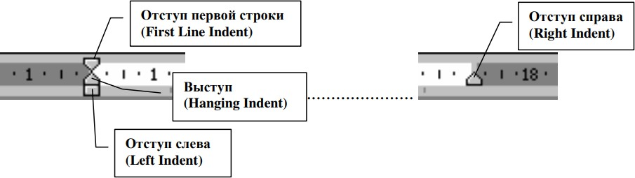
Рис. Ограничители отступов абзаца на масштабной линейке